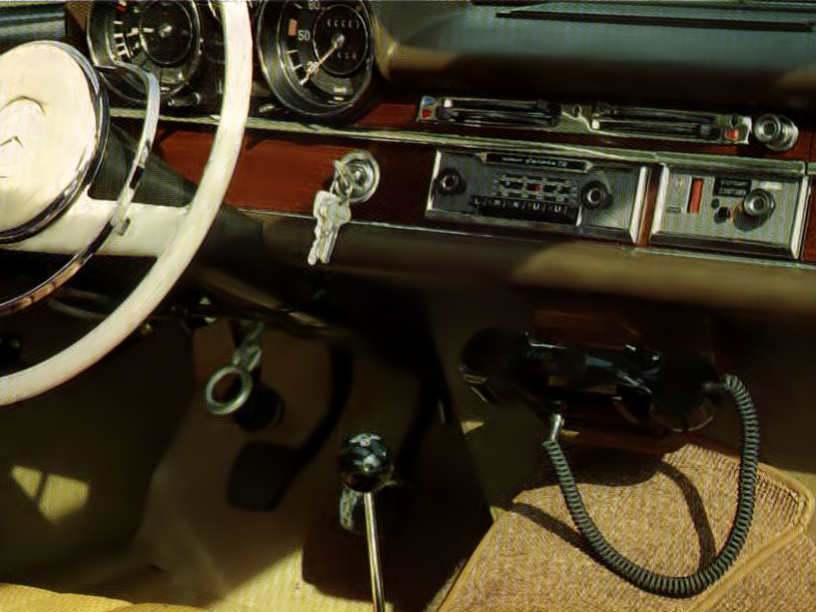
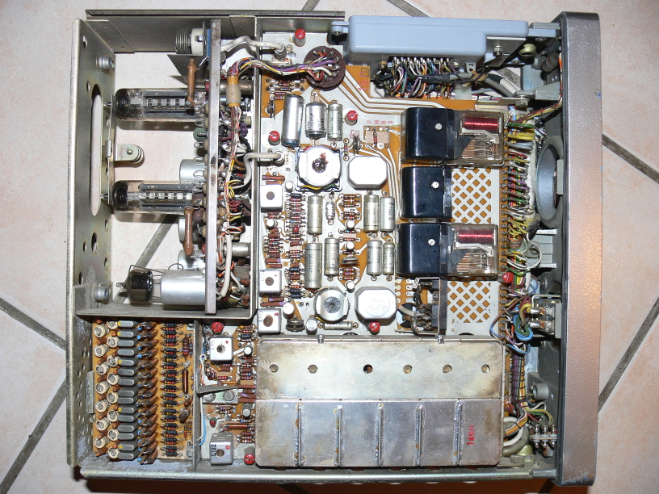
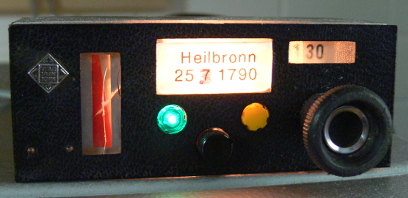
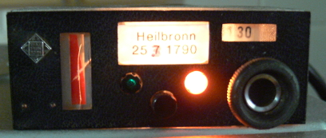
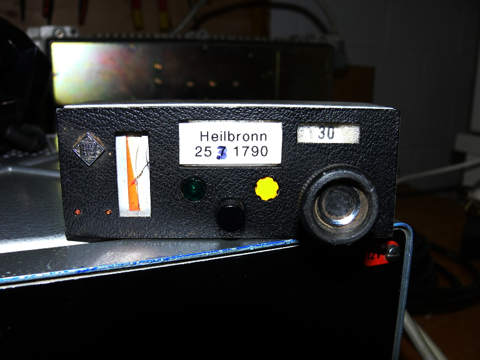

A-Netz

History
A-Netz was the first mobile telephone network in Germany.
It existed between 1985 and 1977.
The first mobile units were huge and heavy and consisted of radio tubes.
Only big cars could carry these units in their trunk.
It used full duplex radio link.
The call was placed by an operator.
After full deployment, there were 136 base stations with a sum of 317 radio transceivers.
A maximum of 10,784 subscribers were counted 1971. The basic charge was 65 German Marks (A1-Netz), 45 German Marks (A2-Netz / A3-Netz).
The German Federal Post Office then raised the price to 270 German Marks in 1972. Also the second mobile network (B-Netz) was deployed.
The number of subscribers decreased to 787 on shutdown in 1977.

- Frequency range: between 156 MHz and 174 MHz
- 17 operator switched channels (30..46) for A1-Netz
- 19 operator switched channels (47..63, 86, 87) for A2-Netz
- 5 semi-automatic switched channels (65, 66, 68, 72, 75) for A3-Netz
- Duplex distance: 4.5 MHz
- Channel spacing: 50 KHz (20 kHz for A3-Netz)
- Modulation: FM
- Frequency deviation: 11..15 KHz
- Mobile station transmit power: 8..12 Watts
- Base station transmit power: 5..30 Watts
How it works
1. Idle state
A base station transmits a continuous 2280 Hz idle tone on down-link channel.
A mobile station detects this tone and indicates a green light.
If the channel is busy or unused in that area, the green light does not appear.
The user must switch channel using the dial.

2. Call from mobile station
The mobile station will only seize the channel, if the green light is on, otherwise it is blocked.
When the user picks up the handset, the phone switches on its transmitter on up-link channel and transmits a continuous 1750 Hz calling tone.
The base station receives this tone and turns off its 2280 Hz idle tone.
The mobile station detects the tone is missing and turns off its 1750 calling tone.
The base station detects the tone is missing and the speech path is connected through to an operator.
The operator asks for the mobile station number and the number to dial and places the call.
3. Call to mobile station
A caller calls the operator and tells the number and the location of the mobile station to reach.
The first 2 digits of the 7-digits mobile station number define on which channel the mobile station has to be paged.
(The user of the mobile station as well as the operator have a list of the calling channels for all base station.
This list shows which 2 digits refer to which channel in a particular area.
The user must select the right channel in order to get paged.)
The third digit of the mobile station number defines what groups of frequencies are used for paging the phone. For each of the last four digits there is a group. (Some digits use the same group.)
- Number xx0xxxx: 2, 2, 3, 3
- Number xx1xxxx: 1, 1, 2, 2
- Number xx2xxxx: 1, 1, 3, 3
- Number xx3xxxx: 1, 1, 2, 3
- Number xx4xxxx: 1, 2, 2, 3
- Number xx5xxxx: 1, 2, 3, 3
- Number xx6xxxx: 1, 1, 1, 2
- Number xx7xxxx: 1, 1, 1, 3
- Number xx8xxxx: 2, 2, 2, 3
- Number xx9xxxx: 1, 2, 2, 2
If a number is 2431790, the third digit ('3') tells us use group 1 for digits four and five, group 2 for digit six and group 3 for digit seven.
Group 1:
- Digit 1: 352.5 Hz
- Digit 2: 367.5 Hz
- Digit 3: 382.5 Hz
- Digit 4: 397.5 Hz
- Digit 5: 412.5 Hz
- Digit 6: 427.5 Hz
- Digit 7: 442.5 Hz
- Digit 8: 457.5 Hz
- Digit 9: 472.5 Hz
- Digit 0: 487.5 Hz
Group 2:
- Digit 1: 502.5 Hz
- Digit 2: 517.5 Hz
- Digit 3: 532.5 Hz
- Digit 4: 547.5 Hz
- Digit 5: 562.5 Hz
- Digit 6: 577.5 Hz
- Digit 7: 592.5 Hz
- Digit 8: 607.5 Hz
- Digit 9: 622.5 Hz
- Digit 0: 637.5 Hz
Group 3:
- Digit 1: 652.5 Hz
- Digit 2: 667.5 Hz
- Digit 3: 682.5 Hz
- Digit 4: 697.5 Hz
- Digit 5: 712.5 Hz
- Digit 6: 727.5 Hz
- Digit 7: 742.5 Hz
- Digit 8: 757.5 Hz
- Digit 9: 772.5 Hz
- Digit 0: 787.5 Hz
Because our 4th digit is 1, we find 352.5 Hz in group 1.
Because our 5th digit is 7, we find 442.5 Hz in group 1.
Because our 6th digit is 9, we find 622.5 Hz in group 2.
Because our 7th digit is 0, we find 787.5 Hz in group 3.
All these tones are sent simultaneously from the base station to the mobile station.
The mobile stations has four detectors for the four frequencies.
If all four tones are detected by the mobile station, a yellow light and a buzzing sound is indicated.
There is no ring-back indication from the mobile station to the base station.
When the user picks up the handset, the phone switches on its transmitter on up-link channel and transmits a continuous 1750 Hz answer tone.
The base station receives this tone and turns off the four paging tones.
The mobile station detects the tone is missing and turns off its 1750 answer tone.
The base station detects the tone is missing and the speech path is connected through to the caller (or operator).

4. Release by the mobile station
If the user hangs up, the mobile station transmits a continuous 1750 Hz release tone.
The base station receives this tone and disconnects the call. It transmits the continuous 2280 Hz idle tone.
The mobile station receives this tone and turns off the transmitter.
5. Release by the base station
If the caller or the operator hangs up, the base station returns to idle. It transmits the continuous 2280 Hz idle tone.
The mobile station receives this tone and turns off the transmitter.
Setup of a base station
Now run your base station on channel 30.
Tune the transmitter to 162.050 MHz and the receiver to 157.550 MHz.
You should tune the receiver to 164.050 MHz first, to check if you hear the idle signal from the base station.
Then tune to actually up-link frequency 157.550 MHz.
The actual level is not yet relevant.
(You may check the quality using '-l 2' or '--loopback' command line option and build a radio loop by tuning the receiver to the transmitter.)
# src/anetz/anetz -k 30
...
anetz.c:170 info : Entering IDLE state, sending 2280 Hz tone.
Base station ready, please tune transmitter to 162.050 MHz and receiver to 157.550 MHz.
on-hook: ..... (enter 0..9 or d=dial)

Turn on you phone and wait for it to warm up (requires about half a minute).
Tune the phone to channel 30 and switch on your transmitter of the base station.
The phone should indicate a (green) light, to show idle channel.
If there is no green light, increase the level of your FM signal to the transmitter.
Or if you can't increase the audio level on the transmitter, do it with 'alsamixer'.
dsp.c:150 info : Detecting continuous 1750 Hz tone. (level = 137%)
anetz.c:244 info : Received 1750 Hz calling signal from mobile station, removing idle signal.
dsp.c:133 info : Lost 1750 Hz tone after 0 ms.
anetz.c:256 info : 1750 Hz signal from mobile station is gone, setup call.
call.c:574 info : Incoming call from '' to 'operator'
... after hangup...
dsp.c:150 info : Detecting continuous 1750 Hz tone. (level = 141%)
anetz.c:272 info : Received 1750 Hz release signal from mobile station, sending idle signal.
anetz.c:201 info : Entering IDLE state, sending 2280 Hz tone.
call.c:695 info : Call has been released with cause=16
dsp.c:133 info : Lost 1750 Hz tone after 0 ms.
call disconnected: hangup (enter h=hangup)
When you pick up the phone, the phone transmits a 1750 Hz calling tone.
On reception at the base station, the base station removes the 2280 Hz idle tone.
After that the call is established.
After establishment, you can use the headset, if present, for speech communication with the phone.
On hangup, the phone transmit a 1750 Hz hangup tone.
Then the base station returns to idle again and sends the 2280 Hz idle tone.
Be sure that the phone turns off the transmitter and indicates the (green) light.
Level adjustment:
We see a receive level of around 140%.
Then start the base station using '-l 2' option for loop-back and tune receiver to the transmitter.
The base station generates a 1750 Hz test signal, just like the mobile phone.
Use the variable resistor (connecting your transmitter) to adjust the volume until the received level matches the same level of your previously received signal.
In my case I adjust the transmitter to match around 140%. (+- 10% is good)
Now, whatever frequency deviation the mobile phone transmits at 1750 Hz, so does your base station.
Use the other variable resistor (connecting your receiver) to adjust the volume until the level matches about 100%. (+- 10% is good)
Switch back the receiver to up-link frequency and restart the phone.
To call to the phone, be sure that your transmitter transmits 'loud' enough to send the four paging sine waves.
The frequency deviation should be between 11 and 15 KHz.
If transmitter limits the deviation, check if the limit can be adjusted up.
Alternatively a direct connection to the PLL is suggested.
Start the base station, if not running already.
Enter the last 5 digits of the phone's number and press 'd' to dial.
If you listen to the transmit signal, you should hear 4 low pitched tones at once.
They are quite loud, if you use the pre-empfasis inside your transmitter. (default)
The phone should now turn off the green light and indicate an incoming call with a yellow light and a buzzer sound.
There is no acknowledgment from the phone until you pick up the call.
If the phone does not indicate an incoming call, increase the volume of the transmit signal, but be sure not to overdrive it.
Also be sure that you are actually dialing the right number, so the base station generates the correct paging tones for your phone.
Instead of transmitting all 4 tones at once, they can be transmitted after each other.
Each tone is plays for a short time.
After the last tone has been played, base station starts again with the first tone.
My phone also responds to a call, even if the tones cycle rather than sent simultaneously.
In this case the deviation level of each tone is two times higher (+6 dB). (The level transmitted is two times lower (-6 dB) than the peak level of 4 simultaneous tones. This may help transmitters with deviation limiters to make the phone ring.)
Add command line option "-P 100" to send each tone for 100 milliseconds.
Try something between 50-200 milliseconds, if the phone still doesn't ring.
Be sure to check: Does your transmitter has enough frequency deviation (15 KHz is suggested)? Do you really send the correct number of your phone, check the frequencies of your phone and use "-D 0" option to see what 4 frequencies the base station actually transmits.
Detecting loss of carrier signal:
To automatically release the call, when the carrier signal gets lost, look at the B-Netz page.
It is the same principle.
[Back to main page]
|